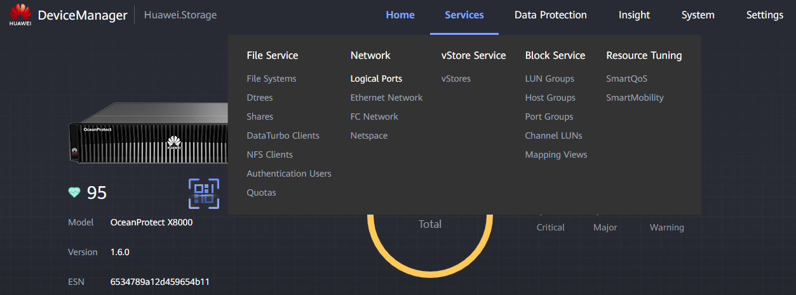
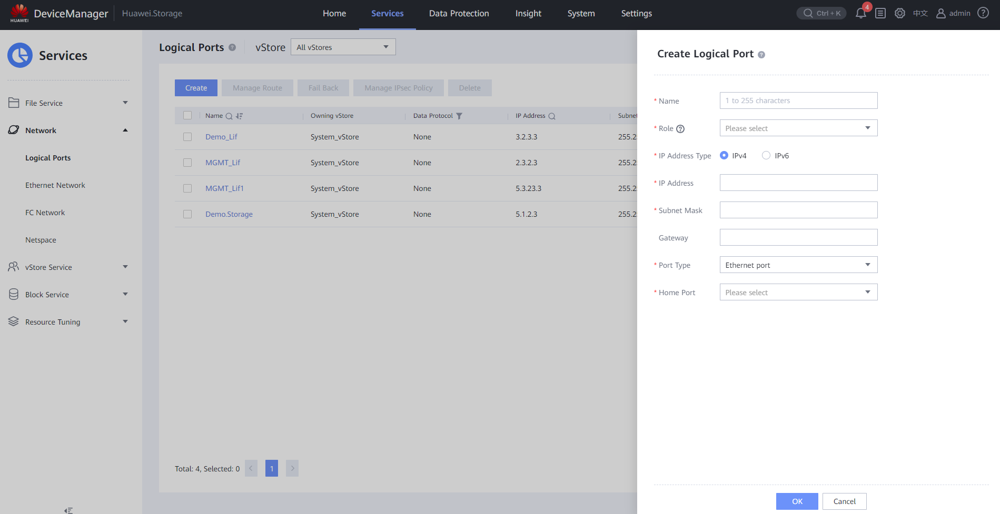

Logical Ports Creation
Requirements
- Connection to the Controller through the Management Port (RJ45 cable)
- IP Address for the Logical Port
- Subnet Mask for the Logical Port
- Role for the port given by client (Management / Service / Replication / ...)
- Data Protocol for the port given by the client (NFS / CIFS / iSCSI / ...)
- Port type for the port given by the client
- Home Port for the port given by the client (Interface Module Ports)
- (Optional) Gateway for the port given by the client
**Switch Access Through Ethernet
Tasks
- Enter the Device Manager (https://192.168.128.101 or the IP of the port)
-
Go to Services > Network > Logical Ports 
-
Click Create and fill the data:
- Name: Descriptive name for the port (e.g. LP_DEV001)
- Role: Given by the client (commonly Service)
- Data Protocol: Given by the client (commonly NFS)
- Owning vStore: Select the vStore created previously for the client
- IP Address Type: Either IPv4 or IPv6 (commonly IPv4)
- IP Address: Given by the client (IP needed for service)
- Subnet Mask: Given by the client (commonly 255.255.255.0)
- Gateway: Given by the client
- Port Type: Given by the client: Ethernet port
- Home Port: Interface Module Port given by client
- Activation Status: Commonly left as Activated
- Click OK to create the Logical Port

Switch Access Through VLAN
- Enter the Device Manager (https://192.168.128.101 or the IP of the port)
- Go to Services > Network > Ethernet Network
- Make sure that the ports you want to use show as "Link up"
-
Click "Bond Ports" and "Create" to fill the information:
- Name: Descriptive name for the Bond Port
- Controller: Select the Controller that has the physical ports
- Netspace: Leave as is
- Available Ports: Select the Physical Ports that will form the bond port

-
Click "OK" to create the Bond Port
-
Click "VLANs" and "Create" to fill the information:
- Port Type: Select Bond port
- Home Port: Select the bond port created previously
- ID: Write ID of the VLAN and press "Add"

-
Click "OK" to create the VLAN with the Bond Port
- Go to Network > Logical Ports
-
Click "Create" and fill out the information:
- Name: Descriptive name for the port (e.g. LP_DEV001)
- Role: Given by the client (commonly Service)
- Data Protocol: Given by the client (commonly NFS + CIFS)
- Owning vStore: Select the vStore created previously for the client
- IP Address Type: Either IPv4 or IPv6 (commonly IPv4)
- IP Address: Given by the client (IP needed for service)
- Subnet Mask: Given by the client (commonly 255.255.255.0)
- Gateway: Given by the client
- Port Type: VLAN
- Home Port: Select the Home Port created previously
- Activation Status: Commonly left as Activated

-
Click "OK" to create the Logical Port
- Test the connection to the Logical Port through:
ping LogicalPort_IP